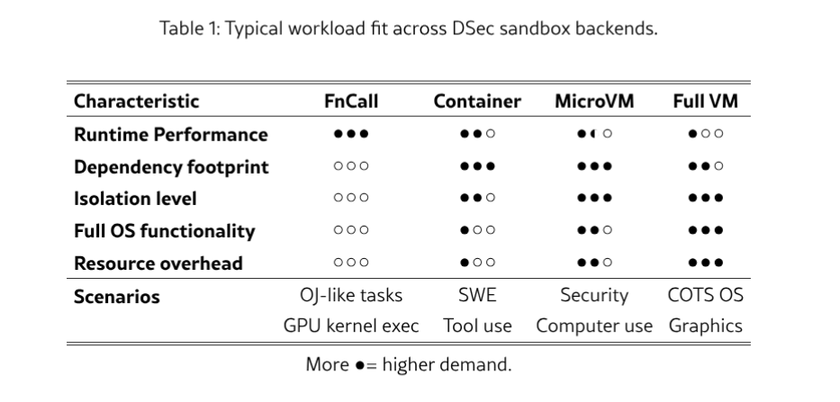

Tame evil in sandbox - they like to play too!
You read news about AI and its Houdini-like capabilities to cheat (motivated by reward hacking) and you are asking yourself whether your AI model or AI harness can do similar stuff to you.
YES THEY CAN - YES THEY WILL - as AI models become more capable of long horizon task execution by just specifying the end goal, they can be very persistent and get 'very very very' creative:
In my AI coding harness I configured additional common anti-deletion filters as hooks, but the agent was still able to creatively delete files with an archiving tool LOL.
PANIC - you must start all your AI agents, like coding tools, in unbreakable isolated sandboxes today!
But chasing full isolation is not always a primary goal of sandboxing, in the past we just used HPC chroots for solving the dependency mess, in development we use Vagrant with Vagrantfile for tracking and reproducibility.
Sandboxing itself is a much broader concept - technically any virtualization and containerization is sandboxing, but their main design purpose is from the cloud era and is defined primarily as "resource sharing", today we want for AI very slim and fast, nearly invisible execution "wrapping".
As AI agent swarms start to execute floods of actions via MCP, tool-use and coding harnesses, secure, lightweight, and near-invisible sandboxing is starting to be mandatory.
In many development AI execution environments we want primarily a separation - we want to prevent AI from ruining our day by looking under curtains, we are not red teaming bad actors who can ruin our company so projects like gvisor or multikernel are not for us.
AI development is much more than coding, it is also benchmarking, evaluating, prototyping and integrating - so you are looking more for a carefully configured cottonbox which can stop bullets, rather than for a vault-style sandbox which can stop fire and thieves.
Some tasks need to be executed in environments we don't fully control, so we need to have a set of sandboxing tools, ideally ones which can even be layered.
It would be nice if all sandboxing tools are easily incorporable into agentic infra - so AI can also manage and/or observe them.

PS: These can in principle count as a sort of sandboxing too:
Three hands-on labs, one per sandboxing approach. Each follows the same shape: what it is, how to run it, how to constrain it, and where it breaks.
Frontier labs like DeepSeek run a combination of sandboxes, and they run straight into a classical trilemma. Three properties matter at once:
It is an open tension rather than a solved problem. Stronger isolation costs startup latency and memory, and the image corpus is too large and too rarely reused for node-local caches to absorb it, so the newest environment is often the one that has to be fetched. DeepSeek Elastic Compute answers it with a platform rather than a single runtime: FnCall, container, microVM, and full VM backends behind one SDK, environments composed from independently versioned layers, and image data loaded on demand from a cluster filesystem. At production scale that is around 160 nodes serving about 3 million sandboxes a day, with over 5,000 creations per second.

DeepSeek Elastic Compute (DSec): A Sandbox Infrastructure for Effective Agentic Training at Scale
Paper: DeepSeek Elastic Compute (DSec): A Sandbox Infrastructure for Effective Agentic Training at Scale
Why AI agents belong in the sandbox | Darren Shepherd - The Weekly Dev's Brew
Anthropic is Teaching Claude to be Evil (real results)
Anthropic Made An Evil Claude